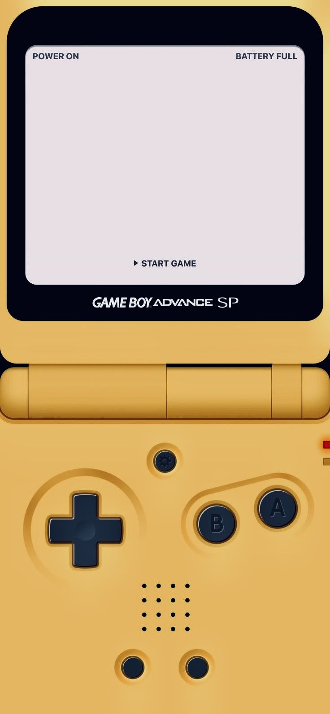
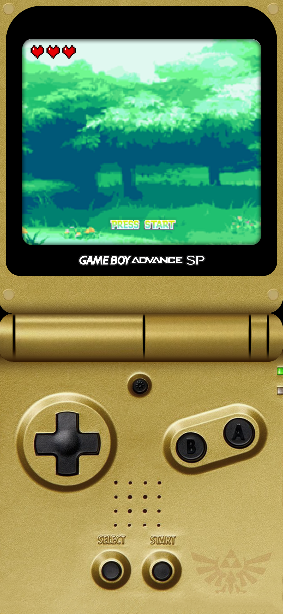
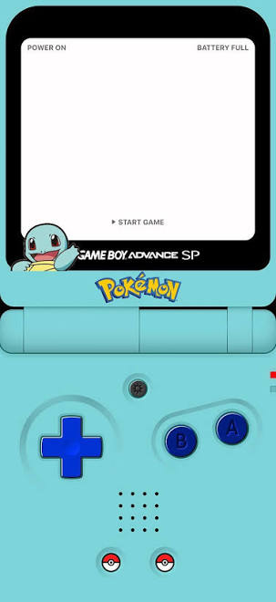
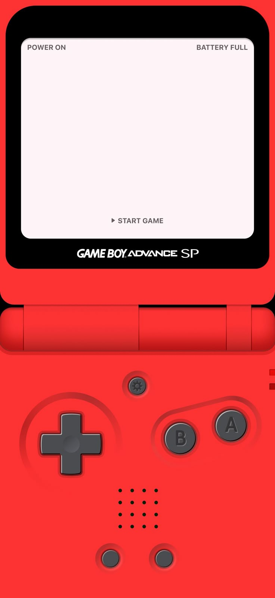
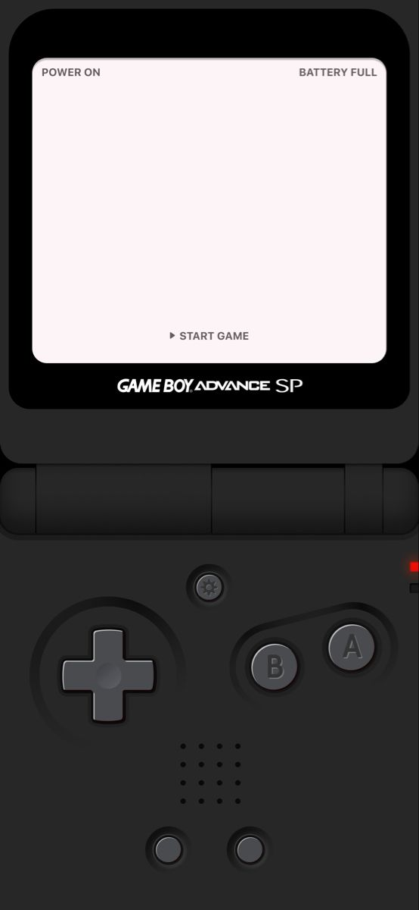
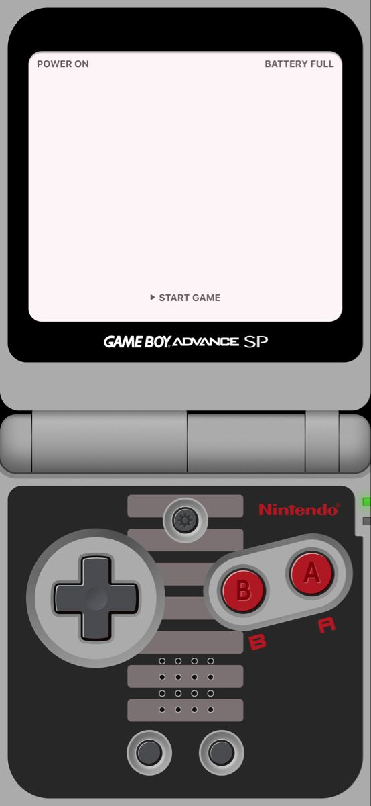
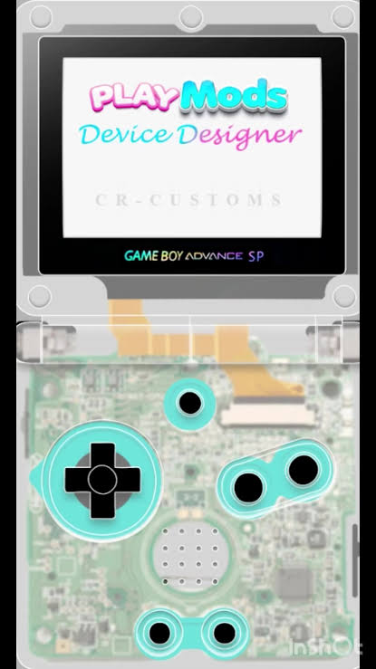
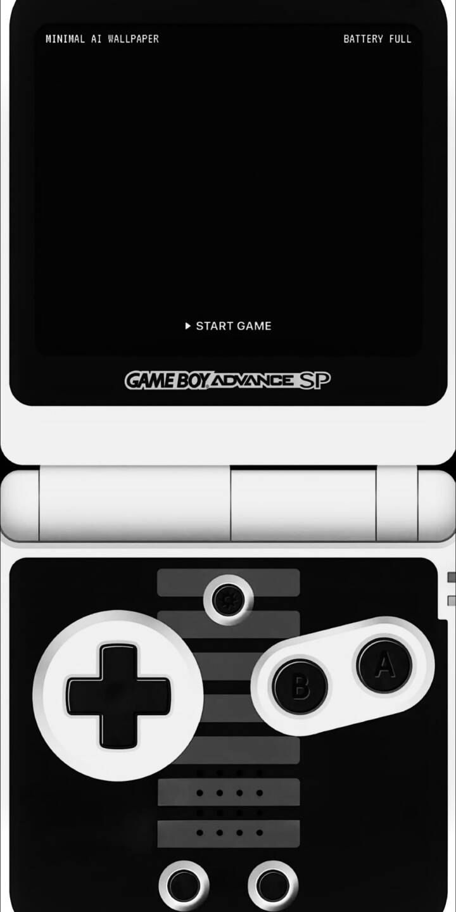

Piega a L e gioca con D-pad, A/B, L/R e filtro LCD AGS-101. Chiudi e continua dalla cover con una mano. Importi tu le ROM — anche da ZIP — nessuna pirateria inclusa.
Nativa in Kotlin + NDK: niente engine pesanti, input senza lag, batteria rispettata.
+ Aggiungi ROM → .gba/.gb/.gbc o .zip che li contiene. Validazione header, dedup SHA-256, saves + 4 slot stato per gioco.
Ogni gioco parte con l'animazione pixelata arcobaleno su sfondo bianco — e all'apertura dell'app il Game Boy si apre davvero.
Lingua scelta al primo avvio, modificabile quando vuoi dalla libreria. Errori tradotti, niente codici strani.
Il cucciolo pixel saluta quando apri, dorme quando chiudi. Clack meccanico sulla cerniera.
Scanline reali sopra il gioco, on/off al volo. LED batteria dal livello reale, haptics lineari, macro Save/Load/Rewind/2x.
In cover, VOLUME SU=A/salto e GIÙ=B/sparo con press/release veri. In flex tornano al sistema.
In app/src/main/assets/skins/ e mappate in Skins.kt — si cambiano dal picker in Flex Mode, più 5 storiche.








Un core, un adapter per device: safe-area, refresh e haptics calibrati per modello.
| Device | Cover | Note |
|---|---|---|
| Razr 40/50 Ultra | 3.6" 1056×1066 165Hz | full-app, il meglio |
| Z Flip 5/6 | 3.4" 720×748 60Hz | serve cover-launcher/Good Lock |
| MIX Flip | ~4" 1392×1208 120Hz | full-app |
| Find N Flip | 3.4" 720×748 60Hz | widget/cover-launcher |
RetroFold-SP.apk dal bottone qui sotto o da Releases..gba/.gb/.gbc/.zip.No: l'app non include alcun gioco. Usa i dump delle tue cartucce (i tuoi file, anche zippati). Senza ROM tue, giochi solo al Pocket Arcade integrato.
L'APK è firmato in debug (gratuito, senza Play Store). Dai “Installa comunque”: il codice è pubblico e ispezionabile su GitHub.
Sì: il rilevamento piega usa le API standard Android (FoldingFeature). I modelli noti hanno solo profili cover/haptics calibrati, gli altri usano il profilo generico.
Il core mGBA gira davvero dal v1.5. Poi: rewind grafico, netplay, cloud saves.
APK sempre aggiornato all'ultimo commit main.
Fan project non affiliato a Nintendo/Motorola/Samsung/Xiaomi/OPPO. GBA è marchio dei rispettivi proprietari. Le ROM restano tue.